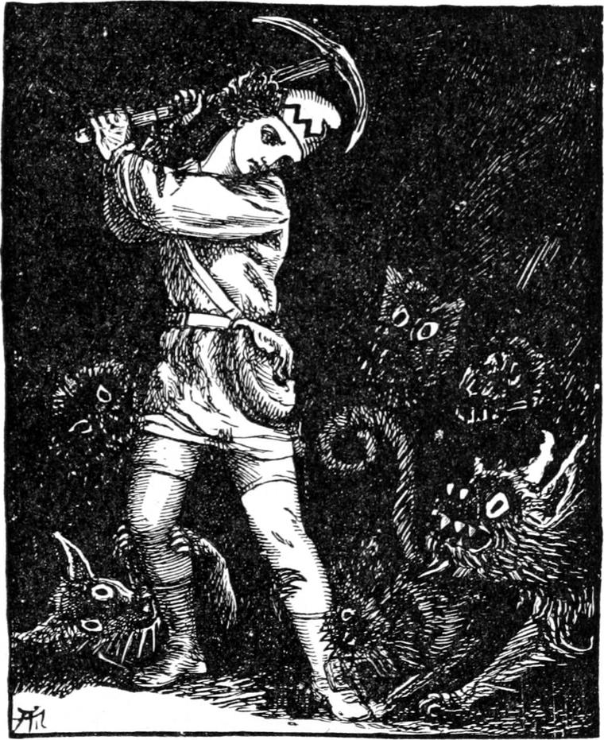
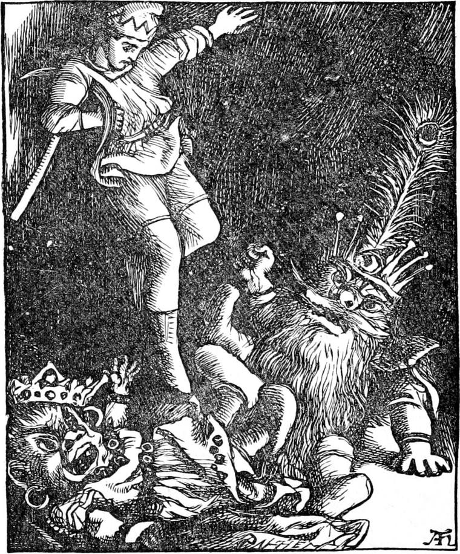

Curdie was as watchful as ever, but was almost getting tired of his ill success. Every other night or so he followed the goblins about, as they went on digging and boring, and getting as near them as he could, watched them from behind stones and rocks; but as yet he seemed no nearer finding out what they had in view. As at first, he always kept hold of the end of his string, while his pickaxe, left just outside the hole by which he entered the goblins' country from the mine, continued to serve as an anchor and hold fast the other end. The goblins, hearing no more noise in that quarter, had ceased to apprehend an immediate invasion, and kept no watch.
One night, after dodging about and listening till he was nearly falling asleep with weariness, he began to roll up his ball, for he had resolved to go home to bed. It was not long, however, before he began to feel bewildered. One after another he passed goblin houses, caves, that is, occupied by goblin families, and at length was sure they were many more than he had passed as he came. He had to use great caution to pass unseen—they lay so close together. Could his string have led him wrong? He still followed winding it, and still it led him into more thickly populated quarters, until he became quite uneasy, and indeed apprehensive; for although he was not afraid of the cobs, he was afraid of not finding his way out. But what could he do? It was of no use to sit down and wait for the morning—the morning made no difference here. It was dark, and always dark; and if his string failed him he was helpless. He might even arrive within a yard of the mine and never know it. Seeing he could do nothing better he would at least find where the end of his string was, and, if possible, how it had come to play him such a trick. He knew by the size of the ball that he was getting pretty near the last of it, when he began to feel a tugging and pulling at it. What could it mean? Turning a sharp corner, he thought he heard strange sounds. These grew, as he went on, to a scuffling and growling and squeaking; and the noise increased, until, turning a second sharp corner, he found himself in the midst of it, and the same moment tumbled over a wallowing mass, which he knew must be a knot of the cobs' creatures. Before he could recover his feet, he had caught some great scratches on his face and several severe bites on his legs and arms. But as he scrambled to get up, his hand fell upon his pickaxe, and before the horrid beasts could do him any serious harm, he was laying about with it right and left in the dark. The hideous cries which followed gave him the satisfaction of knowing that he had punished some of them pretty smartly for their rudeness, and by their scampering and their retreating howls, he perceived that he had routed them. He stood for a little, weighing his battle-axe in his hand as if it had been the most precious lump of metal—but indeed no lump of gold itself could have been so precious at the time as that common tool—then untied the end of the string from it, put the ball in his pocket, and still stood thinking. It was clear that the cobs' creatures had found his axe, had between them carried it off, and had so led him he knew not where. But for all his thinking he could not tell what he ought to do, until suddenly he became aware of a glimmer of light in the distance. Without a moment's hesitation he set out for it, as fast as the unknown and rugged way would permit. Yet again turning a corner, led by the dim light, he spied something quite new in his experience of the underground regions—a small irregular shape of something shining. Going up to it, he found it was a piece of mica, or Muscovy glass, called sheep-silver in Scotland, and the light flickered as if from a fire behind it. After trying in vain for some time to discover an entrance to the place where it was burning, he came at length to a small chamber in which an opening, high in the wall, revealed a glow beyond. To this opening he managed to scramble up, and then he saw a strange sight.

Below sat a little group of goblins around a fire, the smoke of which vanished in the darkness far aloft. The sides of the cave were full of shining minerals like those of the palace hall; and the company was evidently of a superior order, for every one wore stones about head, or arms, or waist, shining dull gorgeous colours in the light of the fire. Nor had Curdie looked long before he recognized the king himself, and found that he had made his way into the inner apartment of the royal family. He had never had such a good chance of hearing something. He crept through the hole as softly as he could, scrambled a good way down the wall towards them without attracting attention, and then sat down and listened. The king, evidently the queen, and probably the crown prince and the Prime Minister were talking together. He was sure of the queen by her shoes, for as she warmed her feet at the fire, he saw them quite plainly.
'That will be fun!' said the one he took for the crown prince. It was the first whole sentence he heard.
'I don't see why you should think it such a grand affair!' said his stepmother, tossing her head backward.
'You must remember, my spouse,' interposed His Majesty, as if making excuse for his son, 'he has got the same blood in him. His mother—'
'Don't talk to me of his mother! You positively encourage his unnatural fancies. Whatever belongs to that mother ought to be cut out of him.'
'You forget yourself, my dear!' said the king.
'I don't,' said the queen, 'nor you either. If you expect me to approve of such coarse tastes, you will find yourself mistaken. I don't wear shoes for nothing.'
'You must acknowledge, however,' the king said, with a little groan, 'that this at least is no whim of Harelip's, but a matter of State policy. You are well aware that his gratification comes purely from the pleasure of sacrificing himself to the public good.
Does it not, Harelip?'
'Yes, father; of course it does. Only it will be nice to make her cry. I'll have the skin taken off between her toes, and tie them up till they grow together. Then her feet will be like other people's, and there will be no occasion for her to wear shoes.'
'Do you mean to insinuate I've got toes, you unnatural wretch?' cried the queen; and she moved angrily towards Harelip. The councillor, however, who was betwixt them, leaned forward so as to prevent her touching him, but only as if to address the prince.
'Your Royal Highness,' he said, 'possibly requires to be reminded that you have got three toes yourself—one on one foot, two on the other.'
'Ha! ha! ha!' shouted the queen triumphantly.
The councillor, encouraged by this mark of favour, went on.
'It seems to me, Your Royal Highness, it would greatly endear you to your future people, proving to them that you are not the less one of themselves that you had the misfortune to be born of a sun-mother, if you were to command upon yourself the comparatively slight operation which, in a more extended form, you so wisely meditate with regard to your future princess.'
'Ha! ha! ha!' laughed the queen louder than before, and the king and the minister joined in the laugh. Harelip growled, and for a few moments the others continued to express their enjoyment of his discomfiture.
The queen was the only one Curdie could see with any distinctness. She sat sideways to him, and the light of the fire shone full upon her face. He could not consider her handsome. Her nose was certainly broader at the end than its extreme length, and her eyes, instead of being horizontal, were set up like two perpendicular eggs, one on the broad, the other on the small end. Her mouth was no bigger than a small buttonhole until she laughed, when it stretched from ear to ear—only, to be sure, her ears were very nearly in the middle of her cheeks.
Anxious to hear everything they might say, Curdie ventured to slide down a smooth part of the rock just under him, to a projection below, upon which he thought to rest. But whether he was not careful enough, or the projection gave way, down he came with a rush on the floor of the cavern, bringing with him a great rumbling shower of stones.

The goblins jumped from their seats in more anger than consternation, for they had never yet seen anything to be afraid of in the palace. But when they saw Curdie with his pick in his hand their rage was mingled with fear, for they took him for the first of an invasion of miners. The king notwithstanding drew himself up to his full height of four feet, spread himself to his full breadth of three and a half, for he was the handsomest and squarest of all the goblins, and strutting up to Curdie, planted himself with outspread feet before him, and said with dignity:
'Pray what right have you in my palace?'
'The right of necessity, Your Majesty,' answered Curdie. 'I lost my way and did not know where I was wandering to.'
'How did you get in?'
'By a hole in the mountain.'
'But you are a miner! Look at your pickaxe!'
Curdie did look at it, answering:
'I came upon it lying on the ground a little way from here. I tumbled over some wild beasts who were playing with it. Look, Your Majesty.' And Curdie showed him how he was scratched and bitten.
The king was pleased to find him behave more politely than he had expected from what his people had told him concerning the miners, for he attributed it to the power of his own presence; but he did not therefore feel friendly to the intruder.
'You will oblige me by walking out of my dominions at once,' he said, well knowing what a mockery lay in the words.
'With pleasure, if Your Majesty will give me a guide,' said Curdie.
'I will give you a thousand,' said the king with a scoffing air of magnificent liberality.
'One will be quite sufficient,' said Curdie.
But the king uttered a strange shout, half halloo, half roar, and in rushed goblins till the cave was swarming. He said something to the first of them which Curdie could not hear, and it was passed from one to another till in a moment the farthest in the crowd had evidently heard and understood it. They began to gather about him in a way he did not relish, and he retreated towards the wall. They pressed upon him.
'Stand back,' said Curdie, grasping his pickaxe tighter by his knee.
They only grinned and pressed closer. Curdie bethought himself and began to rhyme.
You're all so very dirty!
Twenty, thirty, forty—
You're all so thick and snorty!
'Thirty, forty, fifty—
You're all so puff-and-snifty!
Forty, fifty, sixty—
Beast and man so mixty!
Mixty, maxty, leaventy!
Sixty, seventy, eighty—
All your cheeks so slaty!
All your hands so flinty!
Eighty, ninety, hundred,
Altogether dundred!'
The goblins fell back a little when he began, and made horrible grimaces all through the rhyme, as if eating something so disagreeable that it set their teeth on edge and gave them the creeps; but whether it was that the rhyming words were most of them no words at all, for, a new rhyme being considered the more efficacious, Curdie had made it on the spur of the moment, or whether it was that the presence of the king and queen gave them courage, I cannot tell; but the moment the rhyme was over they crowded on him again, and out shot a hundred long arms, with a multitude of thick nailless fingers at the ends of them, to lay hold upon him. Then Curdie heaved up his axe. But being as gentle as courageous and not wishing to kill any of them, he turned the end which was square and blunt like a hammer, and with that came down a great blow on the head of the goblin nearest him. Hard as the heads of all goblins are, he thought he must feel that. And so he did, no doubt; but he only gave a horrible cry, and sprung at Curdie's throat. Curdie, however, drew back in time, and just at that critical moment remembered the vulnerable part of the goblin body. He made a sudden rush at the king and stamped with all his might on His Majesty's feet. The king gave a most unkingly howl and almost fell into the fire. Curdie then rushed into the crowd, stamping right and left. The goblins drew back, howling on every side as he approached, but they were so crowded that few of those he attacked could escape his tread; and the shrieking and roaring that filled the cave would have appalled Curdie but for the good hope it gave him. They were tumbling over each other in heaps in their eagerness to rush from the cave, when a new assailant suddenly faced him—the queen, with flaming eyes and expanded nostrils, her hair standing half up from her head, rushed at him. She trusted in her shoes: they were of granite—hollowed like French sabots. Curdie would have endured much rather than hurt a woman, even if she was a goblin; but here was an affair of life and death: forgetting her shoes, he made a great stamp on one of her feet. But she instantly returned it with very different effect, causing him frightful pain, and almost disabling him. His only chance with her would have been to attack the granite shoes with his pickaxe, but before he could think of that she had caught him up in her arms and was rushing with him across the cave. She dashed him into a hole in the wall, with a force that almost stunned him. But although he could not move, he was not too far gone to hear her great cry, and the rush of multitudes of soft feet, followed by the sounds of something heaved up against the rock; after which came a multitudinous patter of stones falling near him. The last had not ceased when he grew very faint, for his head had been badly cut, and at last insensible.
When he came to himself there was perfect silence about him, and utter darkness, but for the merest glimmer in one tiny spot. He crawled to it, and found that they had heaved a slab against the mouth of the hole, past the edge of which a poor little gleam found its way from the fire. He could not move it a hairbreadth, for they had piled a great heap of stones against it. He crawled back to where he had been lying, in the faint hope of finding his pickaxe. But after a vain search he was at last compelled to acknowledge himself in an evil plight. He sat down and tried to think, but soon fell fast asleep.